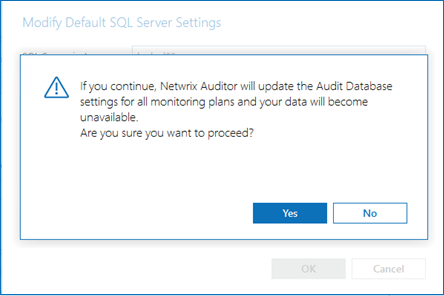

Question
How do I migrate audit databases to another Microsoft SQL Server instance?
Answer
NOTE. If you are migrating the SQL Express instance, install SQL Server Reporting Services (SSRS) in the new server. Refer to the following article for additional information on requirements: Requirements – SQL Server Reporting Services · v10.7 article.
-
Configure a new SQL Server instance.
-
In the Netwrix Auditor server, stop
Netwrix Auditor Archive ServiceandNetwrix Auditor Management Service. -
Back up all Netwrix databases in the old SQL Server instance except for the Netwrix_CommonDB, Netwrix_ImportDB, Netwrix_Auditor_EventLog, ReportServer, and ReportServerTempDB databases. Perform the following steps to back up databases:
-
Open Microsoft SQL Server Management Studio and connect to the original SQL Server instance.
-
Select an audit database, right-click it and select Tasks > Back Up...
-
In the Back Up Database window, review the path the database backup will be stored in in the Destination section.
-
-
Copy the database backups to your new SQL Server. In the new SQL Server instance, perform the following steps:
-
Open Microsoft SQL Server Management Studio and connect to the destination SQL Server instance.
-
Right-click the Databases node and select Restore Database...
-
Under the Source section, select the Device option, and click ... to browse databases.
-
In the Specify Backup Devices window, click Add and select the file source database file (the backed up database). Click OK.
-
Specify the database name and check the Restore checkbox under the Backup sets to restore caption.
-
-
Deploy new Report Database. Refer to the following article for additional information: Deploying the Report Server Database.
-
Stop the old SQL Server (%instance_name%) service.
-
Start
Netwrix Auditor Archive ServiceandNetwrix Auditor Management Service. -
In the main Netwrix Auditor menu, select Settings > Audit Database tab, and specify the new SQL Server and Reporting Service settings.
-
Click Yes once the following message appears:
 -
In the main Netwrix Auditor menu, select Settings > the Investigations tab. Click Modify to specify the new SQL Server settings.
-
Run a Search with the filter When | Equals | Last 7 days. If you see the relevant data, the databases were migrated successfully and the new SQL Server is being used.
-
Optional: Start the old SQL Server instance if it's used for any other tasks.